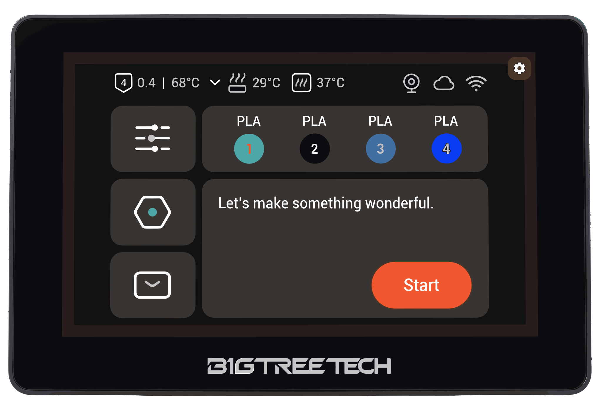

Flash PaxxTouch Remote to BTT K-Touch / PandaTouch — U1 panel mirror over Wi‑Fi.
loading…

Loads paxxtouch-*.bin via jsDelivr CDN (CORS-safe from GitHub Pages).
Click Reload firmware after a new release is published.
Use files from pio run build output (or a release zip):
Build with: pio run -e paxxtouch-remote — files in .pio/build/paxxtouch-remote/
Uses 115200 baud and uncompressed writes for CH340 USB bridges. Takes ~2–3 minutes — keep the cable still.
Disclaimer: PaxxTouch is not responsible for damage to your device. Flashing third-party firmware may void your manufacturer warranty. Proceed at your own risk.